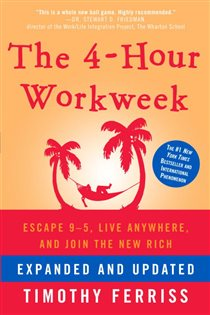
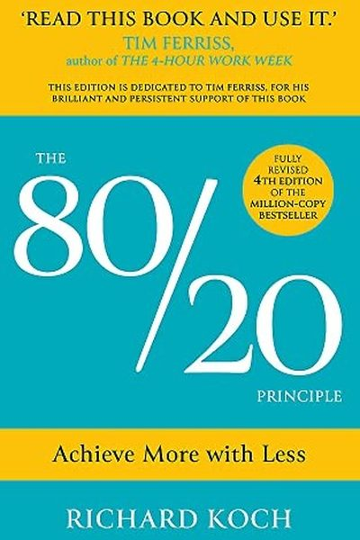
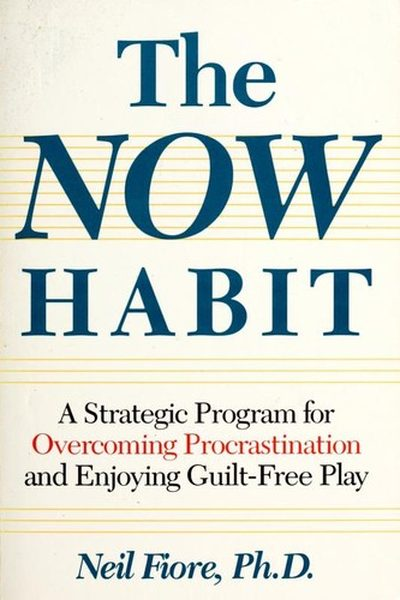
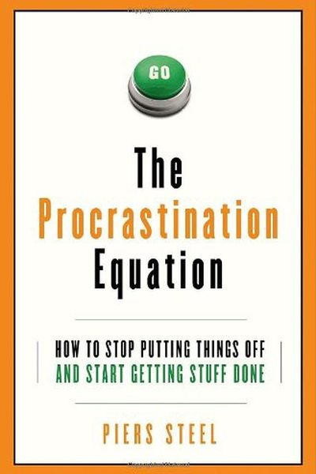
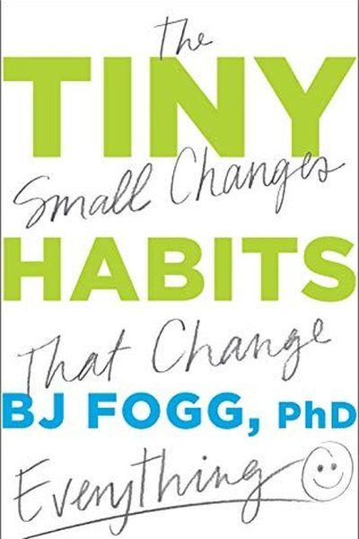
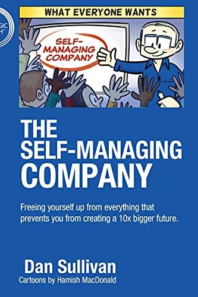

Library › Topics › Focus & Deep Work
Everything on focus and deep work
The complete shelf on attention: killing distraction, doing harder things for longer, and why focus became the rarest resource of the century - 36 books, all free to read.
36 BOOKS · ALL FREE · AUDIO IN 26 LANGUAGES Deep WorkCal Newport · 2016Deep work is rare exactly when it's most valuable. Master focus, and you're competing against almost nobody.9 min · 7 lessons · free summary
Deep WorkCal Newport · 2016Deep work is rare exactly when it's most valuable. Master focus, and you're competing against almost nobody.9 min · 7 lessons · free summary HyperfocusChris Bailey · 2018Your attention is a finite budget. Spend it deliberately: hyperfocus for depth, scatterfocus for creativity.8 min · 6 lessons · free summary
HyperfocusChris Bailey · 2018Your attention is a finite budget. Spend it deliberately: hyperfocus for depth, scatterfocus for creativity.8 min · 6 lessons · free summary IndistractableNir Eyal · 2019You're not distracted by your phone - you're distracted by discomfort. Master your triggers and timebox your l8 min · 6 lessons · free summary
IndistractableNir Eyal · 2019You're not distracted by your phone - you're distracted by discomfort. Master your triggers and timebox your l8 min · 6 lessons · free summary Stolen FocusJohann Hari · 2022Your attention isn't broken - it's being stolen. The system (apps, phones, work culture) is designed against y8 min · 6 lessons · free summary
Stolen FocusJohann Hari · 2022Your attention isn't broken - it's being stolen. The system (apps, phones, work culture) is designed against y8 min · 6 lessons · free summary A Mind for NumbersBarbara Oakley · 2014Math and science aren't about talent - they're about two modes of thinking, chunks, and the courage to be a be8 min · 6 lessons · free summary
A Mind for NumbersBarbara Oakley · 2014Math and science aren't about talent - they're about two modes of thinking, chunks, and the courage to be a be8 min · 6 lessons · free summary Digital MinimalismCal Newport · 2019Stop optimizing your phone - delete, simplify and rediscover: solitude, conversation and leisure that actually8 min · 6 lessons · free summary
Digital MinimalismCal Newport · 2019Stop optimizing your phone - delete, simplify and rediscover: solitude, conversation and leisure that actually8 min · 6 lessons · free summary Make TimeJake Knapp & John Zeratsky · 2018You can't add hours, but you can design them: one Highlight a day, and a phone that works for you, not on you.8 min · 6 lessons · free summary
Make TimeJake Knapp & John Zeratsky · 2018You can't add hours, but you can design them: one Highlight a day, and a phone that works for you, not on you.8 min · 6 lessons · free summary The Bullet Journal MethodRyder Carroll · 2018One notebook, a rapid-logging system, and mindful reflection - the Bullet Journal helps you focus on what matt8 min · 6 lessons · free summary
The Bullet Journal MethodRyder Carroll · 2018One notebook, a rapid-logging system, and mindful reflection - the Bullet Journal helps you focus on what matt8 min · 6 lessons · free summary The Effective ExecutivePeter Drucker · 1967Effectiveness is a discipline, not a talent: manage time, focus on contribution, and do first things first.8 min · 6 lessons · free summary
The Effective ExecutivePeter Drucker · 1967Effectiveness is a discipline, not a talent: manage time, focus on contribution, and do first things first.8 min · 6 lessons · free summary Better Than BeforeGretchen Rubin · 2015Gretchen Rubin's framework for habit change: know your tendency (upholder, questioner, obliger, rebel), use th8 min · 6 lessons · free summary
Better Than BeforeGretchen Rubin · 2015Gretchen Rubin's framework for habit change: know your tendency (upholder, questioner, obliger, rebel), use th8 min · 6 lessons · free summary Eat That Frog!Brian Tracy · 2001Your 'frog' is the biggest, most important task you're most likely to procrastinate on. Eat it first, every mo8 min · 6 lessons · free summary
Eat That Frog!Brian Tracy · 2001Your 'frog' is the biggest, most important task you're most likely to procrastinate on. Eat it first, every mo8 min · 6 lessons · free summary EssentialismGreg McKeown · 2014Almost everything is noise. The Essentialist explores widely, eliminates ruthlessly, and executes effortlessly8 min · 6 lessons · free summary
EssentialismGreg McKeown · 2014Almost everything is noise. The Essentialist explores widely, eliminates ruthlessly, and executes effortlessly8 min · 6 lessons · free summary FinishJon Acuff · 2017You don't need more discipline. You need to cut your goal in half, hide perfectionism, and give yourself permi8 min · 6 lessons · free summary
FinishJon Acuff · 2017You don't need more discipline. You need to cut your goal in half, hide perfectionism, and give yourself permi8 min · 6 lessons · free summary Four Thousand WeeksOliver Burkeman · 2021Productivity is a trap: clearing the decks just refills them faster. Freedom begins when you accept you'll nev8 min · 6 lessons · free summary
Four Thousand WeeksOliver Burkeman · 2021Productivity is a trap: clearing the decks just refills them faster. Freedom begins when you accept you'll nev8 min · 6 lessons · free summary Getting Things DoneDavid Allen · 2001Capture everything, clarify the next action, and trust the system - a mind like water responds perfectly, then8 min · 6 lessons · free summary
Getting Things DoneDavid Allen · 2001Capture everything, clarify the next action, and trust the system - a mind like water responds perfectly, then8 min · 6 lessons · free summary Inspired: How to Create Tech Products Customers LoveMarty Cagan · 2017Cagan's manual for empowered product teams: product discovery before delivery, the four risks every feature ca11 min · 8 lessons · free summary
Inspired: How to Create Tech Products Customers LoveMarty Cagan · 2017Cagan's manual for empowered product teams: product discovery before delivery, the four risks every feature ca11 min · 8 lessons · free summary KaizenMasaaki Imai · 1986KAIZEN = change for the better - not big jumps, but endless small improvements that compound.7 min · 9 lessons · free summary
KaizenMasaaki Imai · 1986KAIZEN = change for the better - not big jumps, but endless small improvements that compound.7 min · 9 lessons · free summary Make It StickPeter C. Brown, Henry L. Roediger III, Mark A. McDaniel · 2014Learning sticks when it feels hard: retrieval, spacing and interleaving beat re-reading, cramming and highligh8 min · 6 lessons · free summary
Make It StickPeter C. Brown, Henry L. Roediger III, Mark A. McDaniel · 2014Learning sticks when it feels hard: retrieval, spacing and interleaving beat re-reading, cramming and highligh8 min · 6 lessons · free summary Scrum: The Art of Doing Twice the Work in Half the TimeJeff Sutherland · 2014Deliver value in small, inspectable chunks with a self-managing team - and let reality correct the plan every 8 min · 6 lessons · free summary
Scrum: The Art of Doing Twice the Work in Half the TimeJeff Sutherland · 2014Deliver value in small, inspectable chunks with a self-managing team - and let reality correct the plan every 8 min · 6 lessons · free summary The 12 Week YearBrian Moran & Michael Lennington · 2013Compress your year to 12 weeks and urgency returns. Vision, weekly plans, and accountability do the rest.8 min · 6 lessons · free summary
The 12 Week YearBrian Moran & Michael Lennington · 2013Compress your year to 12 weeks and urgency returns. Vision, weekly plans, and accountability do the rest.8 min · 6 lessons · free summary
The 4-Hour WorkweekTimothy Ferriss · 2007Retirement is a broken 40-year bet. Redistribute the mini-retirements throughout life: Define, Eliminate, Auto8 min · 6 lessons · free summary The 5 AM ClubRobin Sharma · 2018Win the first hour and you win the day: 20 minutes of sweat, 20 of reflection, 20 of growth - before the world8 min · 6 lessons · free summary
The 5 AM ClubRobin Sharma · 2018Win the first hour and you win the day: 20 minutes of sweat, 20 of reflection, 20 of growth - before the world8 min · 6 lessons · free summary
The 80/20 PrincipleRichard Koch · 199780% of your results come from 20% of your efforts. Find your 20% - and double down on it.8 min · 6 lessons · free summary The Checklist ManifestoAtul Gawande · 2009In a world of overwhelming complexity, the humble checklist is the highest-leverage tool you own.8 min · 6 lessons · free summary
The Checklist ManifestoAtul Gawande · 2009In a world of overwhelming complexity, the humble checklist is the highest-leverage tool you own.8 min · 6 lessons · free summary The First 20 HoursJosh Kaufman · 2013The 10,000-hour rule is about mastery. For useful skill, 45 minutes a day for a month of smart, barrier-free, 8 min · 10 lessons · free summary
The First 20 HoursJosh Kaufman · 2013The 10,000-hour rule is about mastery. For useful skill, 45 minutes a day for a month of smart, barrier-free, 8 min · 10 lessons · free summary The Five AM ClubRobin Sharma · 2018A 20/20/20 morning (move, reflect, grow) plus 'habit installation' science: the case for waking before the wor7 min · 9 lessons · free summary
The Five AM ClubRobin Sharma · 2018A 20/20/20 morning (move, reflect, grow) plus 'habit installation' science: the case for waking before the wor7 min · 9 lessons · free summary The Life-Changing Magic of Tidying UpMarie Kondo · 2011Marie Kondo's KonMari method: keep only what sparks joy, organize by category not location, and let a tidy hom8 min · 6 lessons · free summary
The Life-Changing Magic of Tidying UpMarie Kondo · 2011Marie Kondo's KonMari method: keep only what sparks joy, organize by category not location, and let a tidy hom8 min · 6 lessons · free summary
The Now HabitNeil Fiore · 1988Procrastination is not a time-management problem - it's an emotion-management problem. Change the feeling, cha8 min · 6 lessons · free summary The ONE ThingGary Keller & Jay Papasan · 2013Success is sequential, not simultaneous. Find the ONE thing that makes everything else easier - and protect it8 min · 6 lessons · free summary
The ONE ThingGary Keller & Jay Papasan · 2013Success is sequential, not simultaneous. Find the ONE thing that makes everything else easier - and protect it8 min · 6 lessons · free summary The Power of Full EngagementJim Loehr & Tony Schwartz · 2003Time is fixed, energy is not. Manage your energy like an athlete - full engagement, full recovery - and perfor8 min · 6 lessons · free summary
The Power of Full EngagementJim Loehr & Tony Schwartz · 2003Time is fixed, energy is not. Manage your energy like an athlete - full engagement, full recovery - and perfor8 min · 6 lessons · free summary
The Procrastination EquationPiers Steel · 2010Procrastination is a math problem: Motivation = Expectancy × Value ÷ (Impulsiveness × Delay). Fix the variable8 min · 6 lessons · free summary The Scrolled MindUnknown · 2026Your attention is the product being sold, your focus is the resource being mined, and nobody signed up for the10 min · 10 lessons · free summary
The Scrolled MindUnknown · 2026Your attention is the product being sold, your focus is the resource being mined, and nobody signed up for the10 min · 10 lessons · free summary
Tiny HabitsBJ Fogg · 2019Habits don't need motivation - they need design. Start tiny, anchor it, celebrate - and watch it grow.8 min · 6 lessons · free summary UltralearningScott H. Young · 2019Aggressive, self-directed learning - metalearning, deep practice, and direct application - can outpace formal 11 min · 8 lessons · free summary
UltralearningScott H. Young · 2019Aggressive, self-directed learning - metalearning, deep practice, and direct application - can outpace formal 11 min · 8 lessons · free summary WhenDaniel H. Pink · 2018Time is not just a container; it has shape - and matching tasks to the day's waves is a hidden productivity le7 min · 9 lessons · free summary
WhenDaniel H. Pink · 2018Time is not just a container; it has shape - and matching tasks to the day's waves is a hidden productivity le7 min · 9 lessons · free summary
Who Not HowDan Sullivan & Dr. Benjamin Hardy · 2020Every 'How do I do this?' has a better question hiding inside: 'WHO can do this for me?' Freedom lives in that8 min · 6 lessons · free summary📖 OPEN THE FULL LIBRARY, 500 BOOKS
Every summary free. Mark lessons as read, listen in your language, share quote cards.